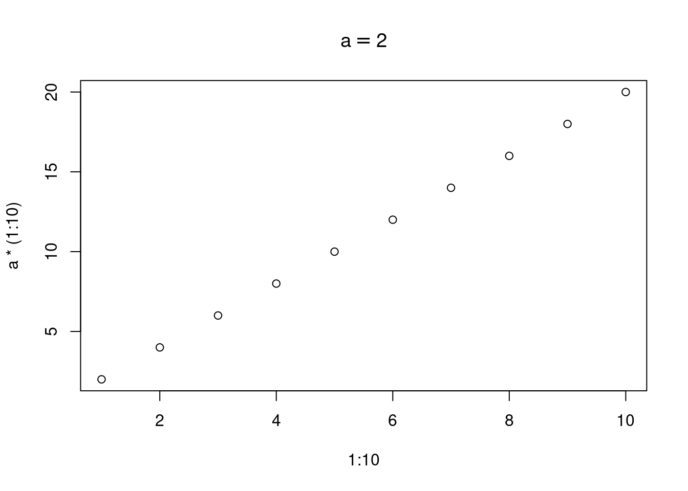

f <- function(x) {
x^2}
# create a call
cl <- call("f", 3)
# display f as unevaluated f(3)
cl
## f(3)
## Test for call.
is.call(f)
## [1] FALSE
is.call("f")
## [1] FALSE
is.call(cl)
## [1] TRUE
## To evaluate a call.
eval(cl)
## [1] 9
# [1] 9R Notes
Note
All R, math, statistics notes here.
TODO: - Render as quarto/html - All R notes here
$$
$$
Do This Week
- article: parse, Lionel, quote, ast etc. https://rpubs.com/lionel-/programming-draft
- 012_mtcars - THINK
- https://www.rostrum.blog/2023/03/03/getparsedata/
- shipunov - visual statistics, use? (https://stats.libretexts.org/Bookshelves/Introductory_Statistics/Book%3A_Visual_Statistics_Use_R_(Shipunov))
Future!
- reactR - connect js/html widgets? Need?
- Health Labs - enter Ox data
- DT
- 040 - sapply, joins, cartesian, 1-example each, cheat, see Jeremy Owens SQL table str, foreign key etc.
- tidygeocoder:: US map, simple examples? ### NSE
- Review June’s articles
file <- “/home/jim/code/docs/R_DEFINITIONS_AND_EXAMPLES.qmd”
https://cran.r-project.org/manuals.html
R Language Definition, explains many terms
Murdoch, R Journal vol 2/2 2010
statisticsglob.com (several parse examples)
hadley "version 1, Advanced R, Ch "expressions"
advanced-r-solutions.rbind.io/expressions.html
Tierney, codeTools ?\section(Definitions}
bindings:
Call A call is an unevaluted function, together with arguments that are evaluated. Call is NOT a function.
Like symbol, expression, call is typeof 'language'.
is.call() is T only for calls. See: "in try... 4010_match_call_examples.Rmd"Calling environment of a function To run, a function must be called. Calling environment refers to environment of the calling function. Also called parent environment. Not to be confused with a function environment. See example ??
Currying Takes a function, partially evaluates, and returns as new function. Example: f(x,y,z) evaluated at z=a, returns g(x,y) = f(x,y,a)
context internal, stack of C structs, track execution (see R Internals 1.4) Allows flow control | error reporting (traceback) | sys.* to work. (except sys.status)
Closures create context. internals do not. primitives only in special
situations. (sys.frame, sys.call count closures from either end of context
stack) TODO - do not understand.
Contexts are Not counted, not reported, not on stack, and coder has no
access to these functions.
REF: R Internals 1.4byte code “Readable” concise instructions; not machine code; no user access; use JIT compiler or interpeter
Deparse See parse.
Evaluation or execution environment In R, a function runs in an environment specific to that function. Also referred to as frame or context. This frame holds evaluation environment. The frame ends when the function completes.
Expression expression() takes an R object and returns expression, which a R list. Note: a statement is code that may do things (side effects) but does not return anything.
Expression v Language R expressions based on list and can be broken down further. Often these are language pieces. Lanugage use pairlists.
First Class - A function can also be used as an argument to another function. Example: lapply(list(), mean)
Frame vs Environment Frame refers to the calling stack of functions. Environment, in R, is property of function, where it looks to find non-local variables.
Function, properties formals(f) arguments in function defintion body(f) code environment(f) finds values of non-formal (non-local) variables where the function was created. Higher Order Function Function that takes another function as an argument and …
Interactive vs. Non-Interactive R, or S, originally designed to be interactive, ie command and response at console. .R, .Rmd, Rscript, R CMD BATCH (TODO: some error conditions do not work in BATCH ??)
Lambda Calculus Instead of naming function (f(x,y) = x^2 + y^2) create abstraction. (x,y) –> x^2 + y^2. Or instead of g(x) = x + 2; write lambdax.x+2. Easy to chain
Lexical Scope How R function finds unbound variables: in environment where function was created. Dynamic Scope Method to find variables in Call Stack at runtime. R uses Lexical Scope, however the R Language allows coder to select environment to evaluate variables. (REF: June Choe Slack/Nov 3 2021)
Scheme added (?) Portion of code in which binding applies to a variable??
In R, an “evaluator” find any “unbound symbols” (in an expression) by using variable bindings in effect when created.
match. - match.arg - match.call - match.fun
namespace: REF: https://cran.r-project.org/doc/manuals/r-release/R-ints.html#Namespaces | Namespaces are environments associated with packages (and once again the base package is special and will be considered separately). A package pkg defines two environments namespace:pkg and package:pkg: it is package:pkg that can be attached and form part of the search path.
operator (non-R) An operate takes a function f and returns new function g. Example: f'(x) = g(x)
package:
Pairlist
Parent Frame of function If function g() is called inside body of function f, the g has the parent frame (aka calling environment) that is execution environment of f. DRAW Diagram
Parse Convert a string (character vector) into an R Expression, which is NOT a string. Motivation is to setup R object for manipulation before evaluation. Parse(*.R) removes comments. Deparse converts an R Expression to a string (character vector) .
Parse & Deparse are NOT? opposites. See Murdoch
(latex) parse: string ==> R expression (error if invalid) deparse: R expression ==> string (actually: structure(expression(), scrfile)
options Temporary vs global vs local. Read R manual.(TODO)
if,+, sin, sqrtC functions
SEE ADV-R Chapter 6, code: 059 (myoldcode)
SEE https://nsaunders.wordpress.com/2018/06/22/idle-thoughts-lead-to-r-internals-how-to-count-function-arguments/
SEE R Internals/Ch 2
Do not understand at deeper level
# TODO
# R complains about putting function in data.frame
### check several functions
y <- list(sin, "sin", c, switch, typeof, sqrt, `if`, `+`)
quote(sin)
quote("sin")
quote(c)
quote(sqrt)
quote(`if`)
quote(`+`)
deparse(y)
data.frame(object = y,
typeof = sapply(y, typeof),
is.primitive = sapply(y, is.primitive),
is.function = sapply(y, is.function))R R has two parents: S, based on C, Fortran for statistics. R also has functional component, based on Scheme.
It is possible to abuse R, using it more like S code. (?)Reification Abstract idea to treat all code as “data”, including functions, structures, etc. This means all such objects can be modified by code. C has. (TODO)
A function f is IF replacing x with its value returns same.
f = function(x) x
x = 6
identical(f(x), f(6))
## [1] TRUEHowever, not all R functions have this property.
x=6
identical(quote(x), quote(6))
## [1] FALSEReferencial Semantics Changes to values are done in memory. There is no copy.
Substitute When used in function with formal variable, substitute stops evaluation, captures the user’s code and returns a call (ie unevaluated )
syntax How code looks, is { in right place, a grammar.
Syntax Sugar Syntax to make easier for human to express or write code efficiently.
Vectorize No loops, no for, no lapply. Example:
a <- 1:10^4
x <- a[a %% 2 == 0] # select elments of a vectorExample: array[i] vs. get_array(array, i)
Example: `+` (1,2) vs. 1 + 2semantics What does the code DO?
String String (“5+5”) is NOT call. No such thing as evaluating a string. See 0210_ You can PARSE a string and then manipulate it. Simpler to eval a quote(5+5) to return the sum.
Method to substitute the value of expr into a string. Can think of it as template with holes.
SEE: https://www.r-bloggers.com/2018/03/math-notation-for-r-plot-titles-expression-and-bquote/
x = 5
bquote(x == .(x))
## x == 5
## from ethz documentation, takes expr, returns lang ob
default <- 1
(z = bquote( function(x, y = .(default)) x+y ))
## function(x, y = 1) x + y
typeof(z)
## [1] "language"
is.call(z) #T
## [1] TRUE
is.expression(z) #F
## [1] FALSE
is.symbol(z) #F
## [1] FALSE
a = 2
plot(1:10, a*(1:10), main = bquote(a == .(a)))
#| label: symbol
#| include: true
#| collapse: true
x <- 10
typeof(x)
## [1] "double"
is.symbol(x)
## [1] FALSE
is.symbol(as.name(x))
## [1] TRUE
is.symbol(s <- as.symbol(x) )
## [1] TRUE
typeof(s)
## [1] "symbol"
s
## `10`See R Lang Ref: 2.1.3.1 Symbol (aka name), usually name of R object. Use
`as.name() to coerce to symbol or quote() or atoms of parse()
In order to manipulate symbols we need a new element in our language: the
ability to quote a data object. Suppose we want to construct the list (a
b). We can’t accomplish this with (list a b), because this expression
constructs a list of the values of a and b rather than the symbols
themselves. This issue is well known in the context of natural languages,
where words and sentences may be regarded either as semantic entities or as
character strings (syntactic entities). The common practice in natural
languages is to use quotation marks to indicate that a word or a sentence
is to be treated literally as a string of characters. For instance, the
first letter of “John” is clearly “J.” If we tell somebody “say your name
aloud,” we expect to hear that person’s name. However, if we tell somebody
“say ‘your name’ aloud,” we expect to hear the words “your name.” Note that
we are forced to nest quotation marks to describe what somebody else might
say. We can follow this same practice to identify lists and symbols that
are to be treated as data objects rather than as expressions to be
evaluated. However, our format for quoting differs from that of natural
languages in that we place a quotation mark (traditionally, the single
quote symbol ’) only at the beginning of the object to be quoted. We can
get away with this in Scheme syntax because we rely on blanks and
parentheses to delimit objects. Thus, the meaning of the single quote
character is to quote the next object. Now we can distinguish between
symbols and their values:
https://stackoverflow.com/questions/8846628/what-exactly-is-a-symbol-in-lisp-schemeVariable Three kinds:
* formals,x f = function(x= … )
* local,a f = function() {a =10}
* free, unbound, global, z f = function() (print(z))
function
f <- function(x=NULL) {
x^2
}
formals(f) ## pairlist
## $x
## NULL
body(f) ## language, $\code{call}$
## {
## x^2
## }
environment(f) ## environment
## <environment: R_GlobalEnv>
args(f) ## closure
## function (x = NULL)
## NULL## returns expression
parse(text= '2^2')
## expression(2^2)
## fails, does not know a is.
# parse(text= '2a')call
f <- function(x=NULL) {
}
cl <- call("f", list(x=2))
cl
## f(list(x = 2))
is.function(cl)
## [1] FALSE
is.call(cl)
## [1] TRUE
## Args must be evaluated, even if f is unevaluted
x <- 2
call("f", list(x))
## f(list(2))
#call("f", list(x=a)) # throws errorres <- substitute(x+a)
res
## x + a
is.call(res)
## [1] TRUEK-nearest neighbors, K is given
\forall x \in X , which could be any dimension , is already assigned to a region. For a new point, examine its K nearest neighbors who decide by majority vote which region x belongs to. SEE: wine example SEE: Gaglow book.
Bias-Var Tradeoff.
With non-zero noise, of variance \sigma^{2} the best approximate to f(x) will always have non-zero error: Isn’t there a relation betwee E, VAR? like x and p ?
Error = E(f_hat) + Var(f_hat) + \sigma^{2} Error \gteqq 0 SEE Berkeley Crash Course; Matloff